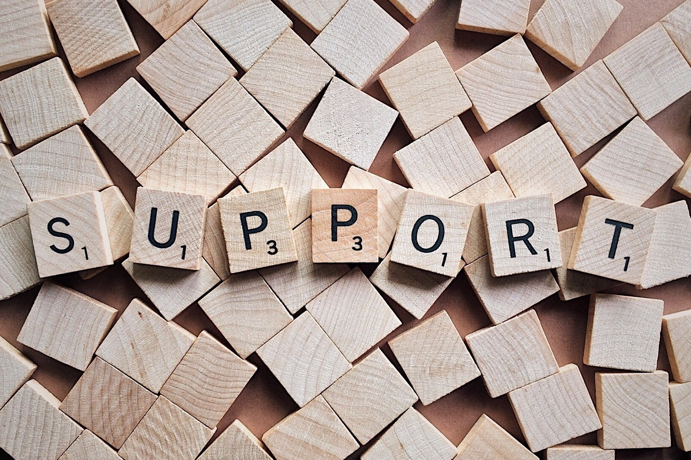

Seek Help
Sometimes, even after a heart-to-heart with Triumph Tidings, you might still feel the weight of the world on your shoulders. And that's okay. There's no magic "fix-it" button for life's challenges, and sometimes, you need a human hand to walk alongside you.
Remember, reaching out for professional help isn't a sign of weakness – it's a courageous step towards healing and growth. We're here to cheer you on every step of the way, but we also want to be honest: if you're feeling overwhelmed, seeking professional support is the bravest thing you can do.
Here are some amazing resources:
- National Suicide Prevention Lifeline: 988 (available 24/7)
- The Trevor Project: 1-866-488-7386 (available 24/7) for LGBTQ+ youth
- Crisis Text Line: Text HOME to 741741
- The Jed Foundation 1-800-273-8255 (available Monday-Friday, 10 am to 5 pm EST)
- National Alliance on Mental Illness (NAMI)
These heroes are champions of mental health, offering a listening ear, expert guidance, and the support you need to feel like yourself again.
Take a deep breath, reach out, and remember – you're not alone in this. We're here for you, and so are these incredible resources. Let's walk this path together, one brave step at a time. 